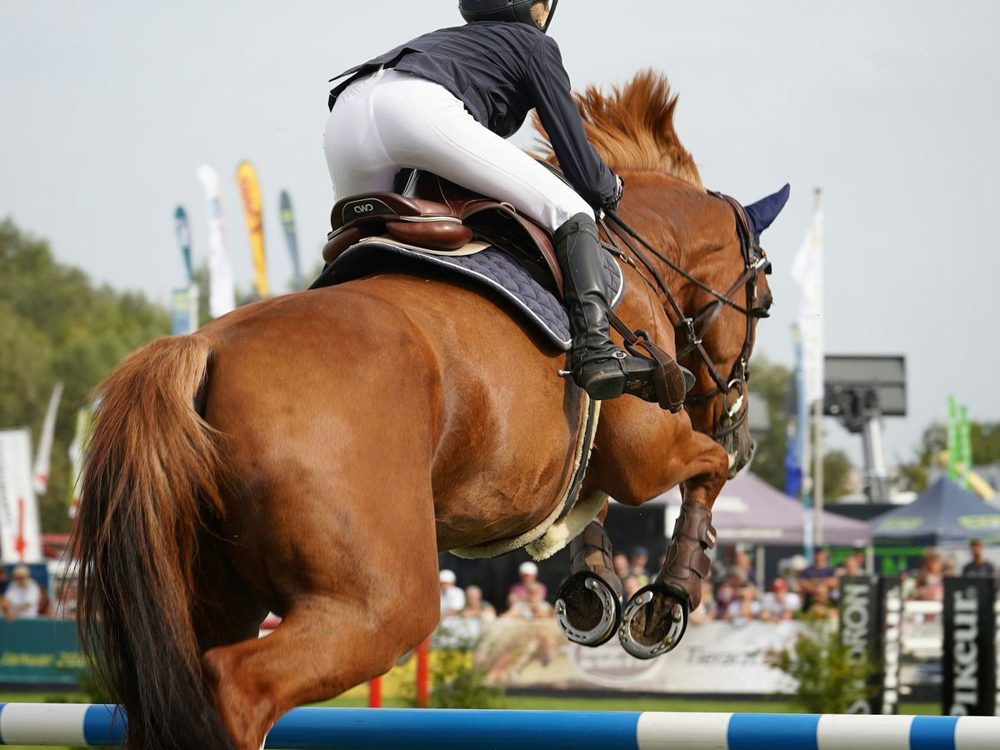

Emergent Cooperation in a Pandemic ↗
Can selfish multi-agent RL agents learn to share scarce medical resources? An impact reward cuts deaths 4–11% versus selfish baselines.
(01)
06 projects
Research, teaching and coursework at Stanford, across multi-agent reinforcement learning, interpretability, computer vision and clinical NLP.
Research & projects
Can selfish multi-agent RL agents learn to share scarce medical resources? An impact reward cuts deaths 4–11% versus selfish baselines.
When can we trust AI explanations? A mechanistic audit of chain-of-thought in Llama-3-8B with logit lens and activation patching: the model commits to its answer in the last ~3 of 32 layers whether or not it reasons first.
Predicting showjumping outcomes from broadcast video with self-supervised representations, controlling for the venue confound.

A hybrid model that codes rare-disease phenotypes from free-text clinical notes by following the Human Phenotype Ontology hierarchy, and abstains when it is unsure. It beats PhenoBERT on precision and F1 on the GSC+ and ID-68 benchmarks. With Riya Narain.
Personalized menstrual-health recommendations learned offline from wearable data with fitted Q-iteration and behavior cloning.
Can Q-learning learn better A* heuristics for imperfect mazes with loops?
Teaching
Lead weekly lab sections for Stanford's systems programming course, teaching C, memory, and debugging with gdb and Valgrind to 30 students.
Graduate coursework